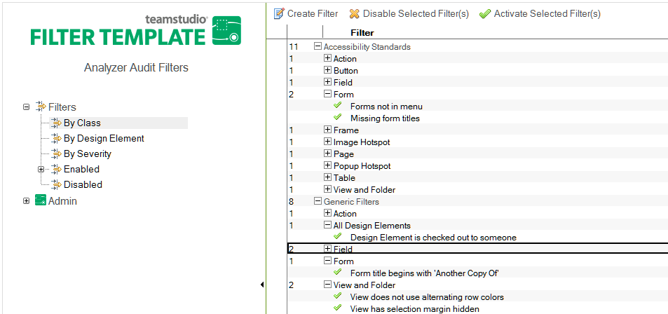

Reviewing Filters
When you open the Analyzer Filter database, you can review the following:
- Filter Classes—name and description
- The Filters themselves
- by the Class they are assigned to
- by the Design Element they audit
- The Severity Definitions—name and description
